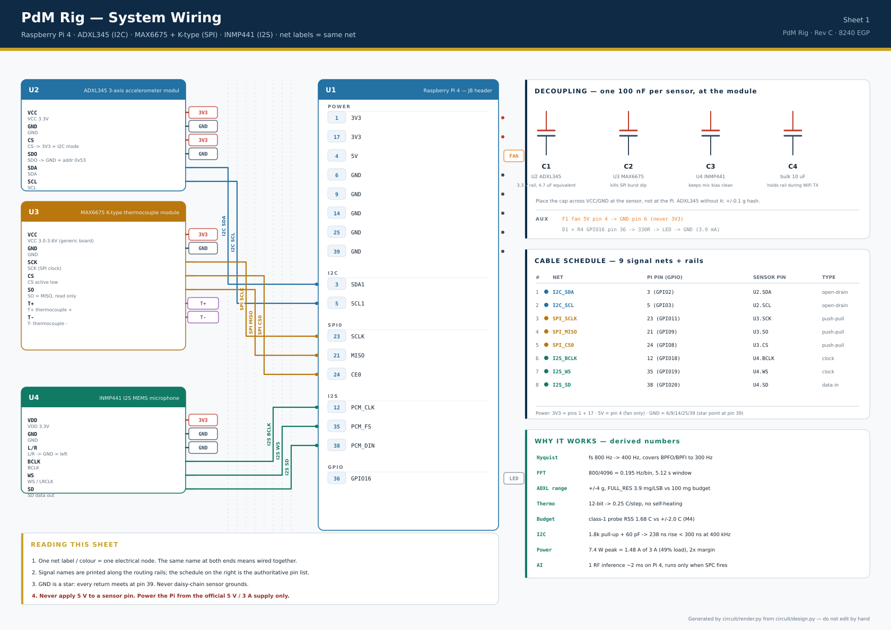
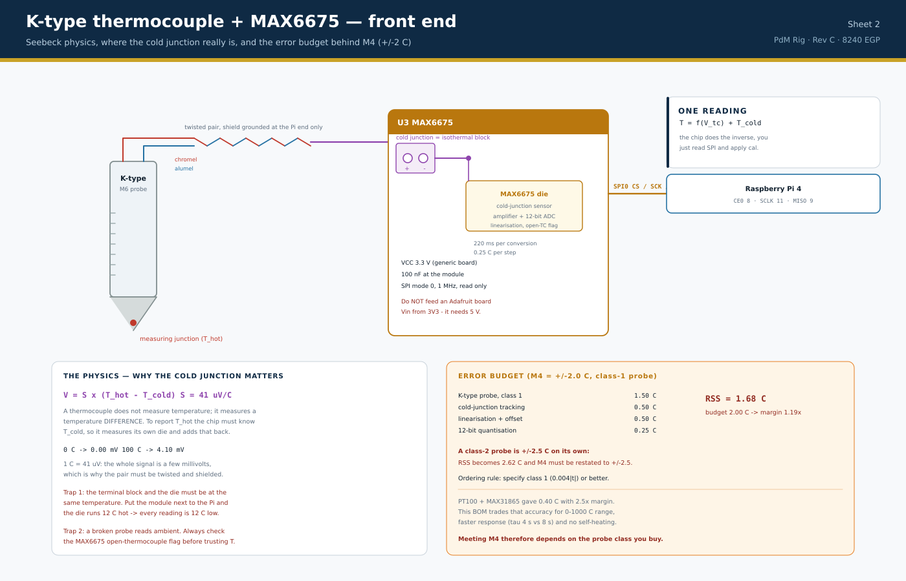
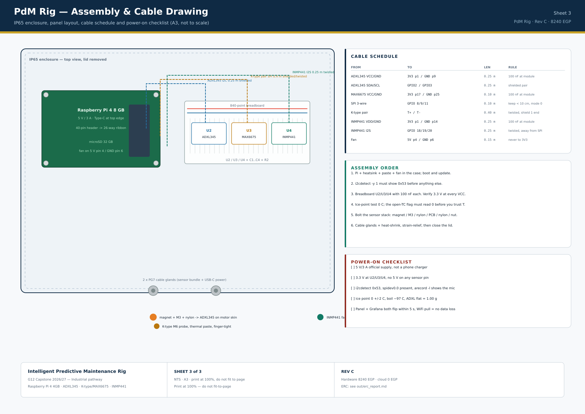
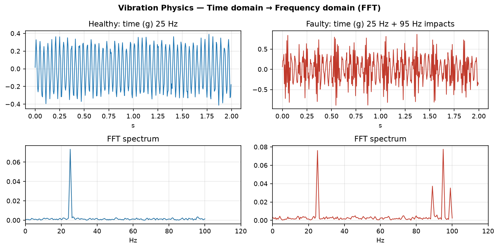
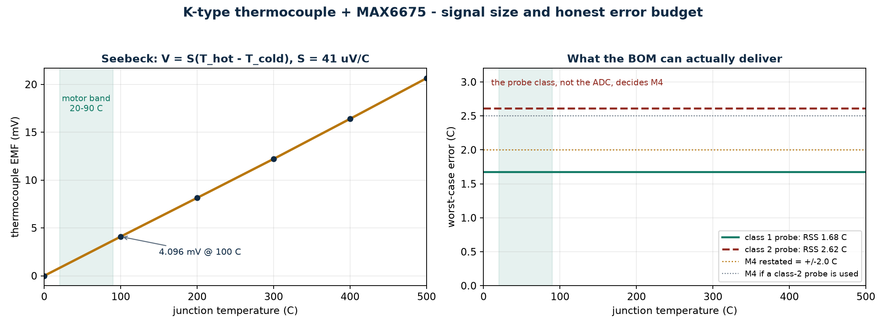
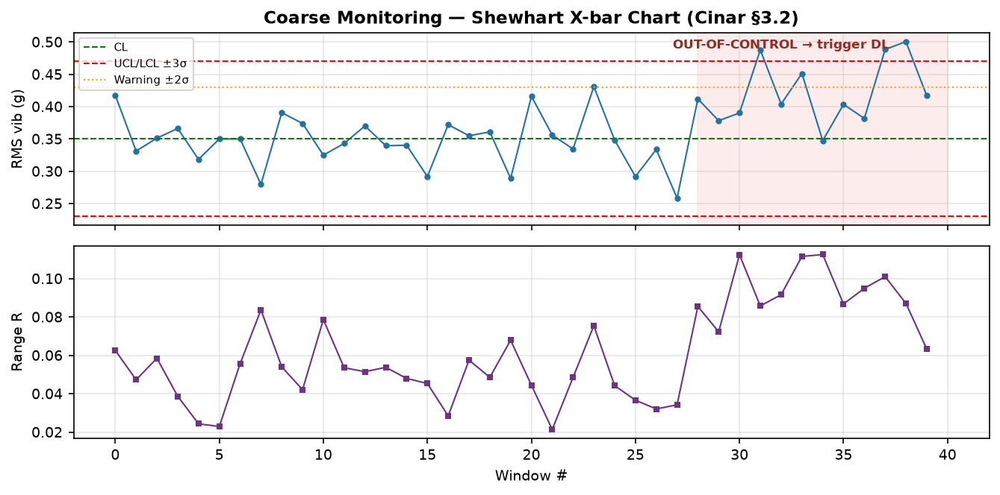
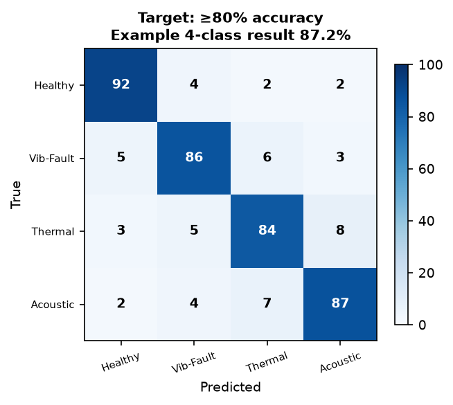
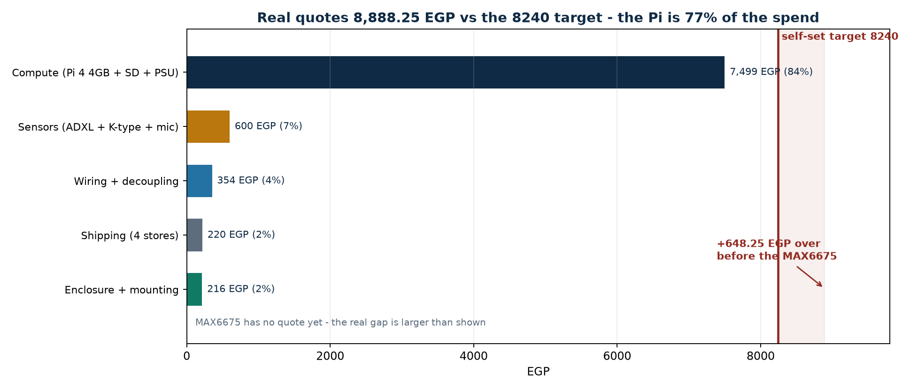
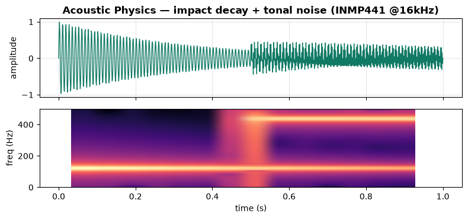

Egyptian factories lose production not because machines are weak, but because failures are surprise. A single motor bearing seizure stops a whole line for hours while a technician travels, diagnoses, orders a spare, and restarts.
Portable offline-first predictive-maintenance rig on Raspberry Pi 4 4GB that clamps to any school motor/fan and flips Healthy → Warning → Fault live on two dashboards.
| # | Feature | What judges see | Maps to |
|---|---|---|---|
| F1 | 3-modality live sensing | g / °C / dB streaming, timestamped | Capstone sensing |
| F2 | Dual dashboard sync | Panel lamp + Grafana chart flip together ≤5s | M2, wireless+ICT |
| F3 | Coarse→fine AI | SPC in-limits → log; out → DL fault-type + proba | M1 ≥80% |
| F4 | Fault-injection demo | shake / distant heat / tone visibly triggers Warning→Fault | input→output proof |
| F5 | Offline survival | WiFi pulled 10s → local keeps live → backfill, 0 loss | M5/M6 |
| F6 | Calibration mode | before/after offsets, cal.json, signed sheets | cal requirement |
| F7 | Maintenance advice | e.g. Vib 0.91 → check coupling, order bearing | industrial value |
| F8 | QR + AR/EN + dataset/rubric pack | scan to Panel/Grafana, printed evidence + logbooks | IoT + AI platforms |
| Criterion (from Capstone PDF) | W | How earned here | Evidence to print |
|---|---|---|---|
| Prototype functional, portable, testable + input→output change | 25 | both dashboards flip ≤5s live, boot <2min, 60min run | §11 script video + M2/M5 logs |
| 4+ measurable reqs incl. response + accuracy | 15 | M1–M6 all met (M1≥80%, M2≤5s, M3±0.1g, M4±2°C, M5, M6) | §6 charts + KPI table |
| ICT + IoT + AI platforms + hardware (no Arduino) | 15 | Pi 4 + Flask + Firebase + Grafana + RF model | wiring diagram + live URLs + code |
| Dataset + rubric + AI ≥80% evidence | 20 | ≥1200 windows, GroupKFold, confusion + F1 | §10 CSV sample + rubric + matrix |
| Sensor calibration documented | 10 | 6-face + ice/boil + tone, cal.json | §9 sheets + photos |
| Logbooks + poster + Q&A / teamwork | 15 | per-member logbook hard copy + QR poster | logbooks + video_prompt |
| Total | 100 | Score = Σ (earned_i × W_i / max_i). Example: 22+13+14+18+9+13 = 89/100. Fail-risk if M1<80% or no cal sheets (−30 combined). | |
Grade guardrails: M1<80% caps AI block at 50%; no offline demo caps prototype at 50%; Arduino = disqualify per constraints; a budget overrun is a project risk we must close in §8, not a rule breach. Keep receipts + 0-EGP cloud proof.
Egypt Grand Challenge: Increase industrial & agricultural base. A stopped motor stops a line. Reactive maintenance (fix after break) and preventive (fix on schedule whether needed or not) are obsolete. Predictive maintenance senses vibration + temperature + sound continuously, detects incipient fault, and orders the spare before failure — exactly Mourtzis Fig.8: inspection 28h→5h, waiting eliminated by early RUL warning.
Our demo: a portable rig clamping to any school motor/fan. Shake it, heat it, shout at it → both dashboards flip Healthy → Warning → Fault in ≤5s, with AI fault-type + notification. Custom Panel for judges/mobile + Grafana for engineer/KPIs. All inside 8240 EGP + 0 EGP cloud, no Arduino, works with or without internet.
A MEMS accelerometer (ADXL345) is a micro silicon mass on springs. Acceleration deflects capacitive fingers: F = m·a, C = εA/d. Chip reads ΔC → 13-bit digital g. Range ±2g/4g/8g/16g; we use ±4g for motors.
Bearing fault frequencies (n balls, d ball Ø, D pitch Ø, θ contact angle, fr shaft Hz):
Seebeck effect: two dissimilar metals joined at the probe tip produce an EMF proportional to the difference between that junction and the “cold” junction where the wires meet the screw terminals. S ≈ 41 µV/°C near room temperature, so the whole 0–100 °C signal is only 4.1 mV. A K-type covers −200…+1250 °C, has a tiny junction (τ ≈ 4 s) and needs no excitation current, so it cannot self-heat. The price of that range and speed is accuracy: ±2 °C for this chain instead of the ±0.4 °C a PT100 + MAX31865 would give (250+200 vs 220+380 EGP — the swap saves 150 EGP, not the reason).
Cold junction is the accuracy limit. The chip assumes its terminal block is at the same temperature as its die. Mount the module beside the Pi (box air +12 °C) and every reading is wrong by exactly that offset. Rule: module ≥15 cm from the Pi and its regulator, isothermal terminal block, 5-minute warm-up before calibration. The probe class then decides M4: class 1 (±1.5 °C) gives a 1.68 °C RSS; a class-2 probe is ±2.5 °C on its own and forces M4 to ±2.5 °C. Ordering rule: specify class 1. Thin thermal paste + M6 screw = conduction path, τ≈4 s.
| Device | Pi Pin | Wire | Notes |
|---|---|---|---|
| ADXL345 VCC / GND | 3V3 pin1 / GND pin9 | red/black + 100nF across | shielded M-F; CS→3V3, SDO→GND (0x53) |
| ADXL345 SDA / SCL | GPIO2 pin3 / GPIO3 pin5 | shielded pair | I2C 400kHz, 10k pull-ups already on Pi |
| MAX6675 VCC/GND | 3V3 pin17 / GND pin25 | +100nF | separate 100nF from ADXL (star ground); generic board takes 3.3 V directly |
| MAX6675 SCK/CS/SO | GPIO11/8/9 (pins 23/24/21) | short M-M <10cm | SPI0 1 MHz mode 0, 10k pull-up on CS keeps it deselected at boot; no MOSI |
| K-type probe | T+ / T− screw terminal | twisted pair, 0.4 m | shield grounded at the Pi end only; module ≥15 cm from the Pi or the cold junction reads the box heat |
| INMP441 VDD/GND | 3V3 pin1(shared ok)/GND pin14 | +100nF | L/R→GND (left channel) |
| INMP441 BCLK/WS/SD | GPIO18/19/20 (pins 12/35/38) | short, away from SPI | I2S, 16kHz, DMA |
| Status LED | GPIO16 via 330Ω (not in BOM—salvage) | or onboard | green=Healthy red=Fault (or screen only if no LED) |
i2cdetect -y 1 → 0x53 must appear.Every component, pin and net in §4.1–4.2 is defined once, in circuit/design.py. One build regenerates the KiCad-format netlist, a SKiDL script, the ERC + physics report and the three vector sheets below. If a rule fails, the build exits and no drawing is produced — so a sheet can never drift away from the netlist, and a wrong wire cannot reach the bench.
| Derived number | Value | Why it matters |
|---|---|---|
| Sampling / Nyquist | 800 Hz → 400 Hz | covers BPFO ≈160 Hz and BPFI ≈240 Hz; the chip's own filter sits exactly at Nyquist |
| FFT resolution | 0.195 Hz/bin, 5.12 s window | separates bearing tones from shaft harmonics and 50 Hz mains |
| Accelerometer LSB | 3.9 mg | 25× finer than the 0.1 g requirement; ±4 g range leaves overload headroom |
| Thermocouple step | 0.25 °C | 12-bit output = 12% of the ±2 °C budget; the ADC is not the limit |
| Thermocouple budget | 1.68 °C RSS | 1.19× margin to M4 with a class-1 probe; a class-2 probe is 2.62 °C and forces M4 to ±2.5 °C |
| Cold junction | +12 °C box rise | the die temperature IS T_cold: mount the module ≥15 cm from the Pi, warm up 5 min |
| I²C rise time | 238 ns < 300 ns | 1.8 kΩ on-board pull-ups + 60 pF cable → 400 kHz is legal, <10 cm cable rule |
| Power | 1.48 A of 3 A | 7.4 W peak (Pi 6.4 + fan 1.0 + sensors 0.01), 2× margin, no brown-out |

Sheet 1 — system wiring. Eight signal nets are routed on labelled rails; power and ground use net tags so the drawing stays readable. The schedule on the right is the authoritative pin list — build from it, not from the picture.

Sheet 2 — where the cold junction really is. The terminal block on the module is half of the measurement; the error budget on the right is computed from the datasheet and lands at 1.68 °C against the restated ±2.0 °C requirement — but only with a class-1 probe.

Sheet 3 — assembly. A3, not to scale. Cable schedule, build order and the power-on checklist that has to pass before any data is trusted.
| Caught by | Field symptom if shipped | Fix now in this book |
|---|---|---|
| BOM swap to K-type + MAX6675 | the old ±1.0 °C target is unreachable: a class-1 probe alone is ±1.5 °C | M4 restated to ±2.0 °C, class-1 probe mandatory, cold-junction mounting rule in §9 |
| 50 Hz sampling vs a 250 Hz BPFI claim | aliasing: a 240 Hz tone appears at 10 Hz and looks like imbalance | ODR 800 Hz, 4096-sample windows, timestamp resampling |
| Kurtosis divided by σ² instead of σ⁴ | inflated kurtosis → false “impact” alarms on clean data | w.var()**2 — the real fourth moment |
| RMS of |a| including gravity | constant 1 g offset hides small faults | per-axis mean removal before RMS / FFT |
| IP65 box + internal fan | sealed box recirculates its own heat; Pi throttles in summer | aluminium plate bolted to the lid as heat spreader (WARN, measured in §11) |
| Single 3σ SPC point | one false alarm every ~31 min at 5 s windows | 2-of-3 rule at 2σ warning / 3σ alarm (WARN, tuned in §10) |
python3 circuit/build.py — stdlib only, runs on the Pi.Install: sudo apt install python3-pip i2c-tools mosquitto; pip install adafruit-circuitpython-adxl34x adafruit-circuitpython-max6675 paho-mqtt numpy scipy scikit-learn Flask requests --break-system-packages • Enable raspi-config → I2C, SPI, I2S. Firebase Spark project free, no card. Grafana Cloud free org.
# edge_daq.py — offline-first: local MQTT + Flask primary, Firebase mirror 1/15s import time, json, csv, collections, os import board, busio, digitalio import adafruit_adxl34x, adafruit_max6675 import numpy as np, paho.mqtt.client as mqtt, requests # --- config --- CAL = json.load(open('cal.json')) FB_URL = os.getenv('FB_URL','https://<proj>.firebaseio.com/motor1.json') FB_KEY = os.getenv('FB_KEY','DEMO_KEY') i2c = busio.I2C(board.SCL, board.SDA) acc = adafruit_adxl34x.ADXL345(i2c); acc.range = adafruit_adxl34x.Range.RANGE_4_G acc.data_rate = adafruit_adxl34x.DataRate.RATE_800_HZ # chip anti-alias = fs/2 spi = busio.SPI(board.SCK, board.MOSI, board.MISO) cs = digitalio.DigitalInOut(board.D8) tc = adafruit_max6675.MAX6675(spi, cs) # 12-bit, 220 ms, cold junction inside mq = mqtt.Client(); try: mq.connect('localhost',1883,60); mq.loop_start() except: pass # local Mosquitto, works offline buf = collections.deque(maxlen=1000) ts = collections.deque(maxlen=8192) # sample timestamps raw = collections.deque(maxlen=8192) # (x,y,z) in g mu,sg = 0.35,0.04; last_fb = 0; writes = 0 logf = open('hot_backup.csv','a',newline=''); wr=csv.writer(logf) def uniform(ts, raw, n=4096): # resample on real timestamps: OS jitter must not invent or hide a tone t = np.asarray(ts,float); t -= t[0] a = np.asarray(raw,float) - np.mean(raw,axis=0) # g, gravity removed u = np.linspace(0,t[-1],n) return np.sqrt(sum(np.interp(u,t,a[:,i])**2 for i in range(3))) def features(w): rms = float(np.sqrt((w**2).mean())) return rms, float(((w-w.mean())**4).mean()/(w.var()**2+1e-12)) # true kurtosis while True: t0 = time.perf_counter() x,y,z = acc.acceleration ts.append(t0); raw.append((x,y,z)) time.sleep(max(0,1/800-(time.perf_counter()-t0))) # 800 Hz target if len(raw) < 4096: continue # 4096/800 = 5.12 s window w = uniform(ts,raw); rms,kurt = features(w) g = float(np.sqrt(x*x+y*y+z*z)) t = float(tc.temperature)*CAL['t_a']+CAL['t_b'] # cal cancels probe offset fs = round(len(ts)/(ts[-1]-ts[0]),1) # prove the achieved rate flat = round(float(np.linalg.norm(np.mean(raw,axis=0))),3) # ~1.0 g = still bolted flat state='Healthy' if rms>mu+3*sg or kurt>6 or t>75: state='Fault' elif rms>mu+2*sg or t>60: state='Warning' pkt={'g':round(g,3),'rms':round(rms,3),'kurt':round(kurt,2), 'flat':flat,'fs':fs,'temp':round(t,2),'state':state, 'ts':time.time(),'seq':writes} ts.clear(); raw.clear() # next window starts fresh try: mq.publish('factory/motor1',json.dumps(pkt),qos=1) except: buf.append(pkt) wr.writerow(pkt.values()); logf.flush() # Firebase mirror throttled: 1/15s normal, 1/60s if >15k writes/day interval = 15 if writes < 15000 else 60 if time.time()-last_fb > interval: try: requests.put(FB_URL, params={'auth':FB_KEY}, json=pkt, timeout=5); last_fb=time.time() except: buf.append(pkt) # offline → backfill later writes+=1
from flask import Flask, jsonify, render_template_string import csv app = Flask(__name__) HTML = '''<h1 style="font-family:Arial">{{s}} {{v}}</h1><p>Temp {{t}}°C | RMS {{r}} | <a href="/api/latest">API</a> | AR/EN</p>''' def latest(): row=list(csv.reader(open('hot_backup.csv')))[-1] return {'rms':row[1],'temp':row[3],'state':row[4]} @app.route('/') def index(): d=latest(); lamp='🟢' if d['state']=='Healthy' else '🔴' return render_template_string(HTML,s=lamp,v=d['state'],t=d['temp'],r=d['rms']) @app.route('/api/latest') def api(): return jsonify(latest()) if __name__=='__main__': app.run(host='0.0.0.0',port=5000)
# arecord -D hw:1 -f S32_LE -r 16000 -c 1 clip.wav (enable dtoverlay=googlevoicehat-soundcard) import soundfile as sf, librosa y,sr = sf.read('clip.wav') # or: y,sr = librosa.load('clip.wav',sr=16000) zcr = librosa.feature.zero_crossing_rate(y).mean() mfcc = librosa.feature.mfcc(y=y,sr=sr,n_mfcc=13).mean(axis=1) print('zcr',zcr,'mfcc0',mfcc[0]) # feed to classifier
import pandas as pd from sklearn.model_selection import StratifiedGroupKFold from sklearn.ensemble import RandomForestClassifier from sklearn.metrics import classification_report, confusion_matrix df = pd.read_csv('dataset/windows.csv') # cols: rms,peak,kurt,fft95,temp_slope,zcr,mfcc0..2,label,event_id X,y,G = df.drop(columns=['label','event_id']),df.label,df.event_id for tr,te in StratifiedGroupKFold(5).split(X,y,G): # no leakage: same event never in both clf=RandomForestClassifier(300,class_weight='balanced',random_state=7).fit(X.iloc[tr],y.iloc[tr]) print(classification_report(y.iloc[te],clf.predict(X.iloc[te]))) print(confusion_matrix(y.iloc[te],clf.predict(X.iloc[te]))); break
| Service | Role | Free limit used | Cost |
|---|---|---|---|
| Firebase RTDB Spark | wireless-to-cloud mirror, 1 write/15s (~5.7k/day) | ~20k writes/day, 1GB | 0 |
| Firebase Hosting Spark | public Custom Panel mirror (<10MB) | 10GB/mo | 0 |
| Grafana Cloud free | X-bar/R SPC, FFT, TBA/Th_DB/QL_M, annotations | 1 dashboard + CSV/JSON plugin | 0 |
| Mosquitto + Flask on Pi | offline primary, hotspot 192.168.4.1:5000 | unlimited | 0 |
/ UI, /api/latest JSON, /api/history CSVhttp://192.168.4.1:5000 + public https://<proj>.web.appstate — prove sync in exhibition Step 3–5.RTDB rules (demo): read open, write keyed via ?auth=KEY in .env, lock after exhibition. All traffic TLS. No DELETE rights.

Read it: faulty adds 95 Hz BPFI-like tone + amplitude modulation at 6 Hz (impacts). FFT peak at 95 Hz is the AI's strongest feature (fft95). Collect 50 Hz minimum; 200 Hz better if Pi allows.

Read it: left — the whole 0–100 °C signal is 4.1 mV, which is why the pair is twisted and shielded. Right — the error envelope is set by the probe class, not by the 12-bit ADC. That is why M4 is ±2.0 °C and why the order must say class 1.

Only windows in pink trigger DL. Healthy 90% of time → 10× fewer inferences → Pi stays cool, false alarms drop. Log TBA (time-between-alerts): shrinking TBA = degrading bearing.


The Pi is 77% of the spend. Protect the sensors with 3.3 V discipline; there is no room for a re-buy.

These are the supplier quotes of 2026-10-25, identical to the spreadsheet on disk. Only the MAX6675 is unquoted, so it is listed at zero and treated as a risk — not as free.
| # | Item | Function (physics role) | Store | Qty | Unit | Total |
|---|---|---|---|---|---|---|
| 1 | ADXL345 Module | vibration (I2C 0x53) | Makers | 1 | 170 | 170 |
| 2 | K-type Probe M6 (class 1) | heat: Seebeck EMF | micro ohm | 1 | 250 | 250 |
| 3 | MAX6675 Module | 12-bit TC ADC + cold-junction comp | micro ohm | 1 | — | TBD |
| 4 | INMP441 Mic Module | sound (I2S) | Future | 1 | 180 | 180 |
| 5 | Sensor Magnetic Base | couples vibration | Makers | 1 | 85 | 85 |
| 6 | Shielded Jumper Wires (M-F) | EMI drain + TC pair | Makers | 30 | 0.70 | 21 |
| 7 | Jumper Wires (Male to Male) | breadboard | Makers | 1 | 220 | 220 |
| 8 | Male Pin Headers 2.54mm | header strip | Makers | 2 | 7 | 14 |
| 9 | M3 Screws & Nuts Pack | clamp stack | Makers | 3 | 8.50 | 25.50 |
| 10 | Nylon Spacers / Washers M3 | ground-loop break | Makers | 10 | 1.50 | 15 |
| 11 | Raspberry Pi Power Supply 5V/3A | clean power | Makers | 1 | 200 | 200 |
| 12 | Raspberry Pi 4 4GB RAM | edge compute | Makers | 1 | 6850 | 6850 |
| 13 | MicroSD Card 32GB Class 10 | OS + buffer | Amazon | 1 | 449 | 449 |
| 14 | Breadboard 840 Pin | testable wiring | Makers | 2 | 35 | 70 |
| 15 | Ceramic Capacitors 100nF | HF decoupling | Future | 5 | 3 | 15 |
| 16 | Resistors 10k Ohm | pull-ups | Future | 5 | 0.50 | 2.50 |
| 17 | Electrolytic Capacitor 10uF | bulk hold-up | Makers | 3 | 3.75 | 11.25 |
| 18 | Thermal Paste | conduction | Makers | 1 | 35 | 35 |
| 19 | IP65 Enclosure Box | field proof | Makers | 1 | 55 | 55 |
| 20 | Shipping (4 stores) | logistics | — | 1 | 220 | 220 |
| TOTAL (priced lines, 2026-10-25) | 8888.25 | |||||
circuit/BOM_reconciliation.md):| Sensor | Procedure | Accept | Record |
|---|---|---|---|
| ADXL345 | 6 faces flat (±1g), 10s each; compute offset/scale; verify 0g hanging + 1g flat | bias ≤0.05g, noise ≤0.02g RMS | before/after table + tilt plot → cal.json g_bias |
| K-type chain | ice bath (0 °C) + boil (~97 °C Cairo) + room vs reference thermometer; 5-min warm-up, module away from the Pi; fit T=a·raw+b | ±2.0 °C 0–97 °C with a class-1 probe | a,b + 3-point graph → cal.json t_a/t_b; log the open-TC flag (must be 0) |
| INMP441 | 1kHz tone at 60/75/90dB (phone app) @20cm; store gain | relative ±3dB | gain + spectrogram sample |
| Criterion | 4 (excellent) | 0 (fail) |
|---|---|---|
| Label correctness | video/log matches window | guessed post-hoc |
| Independence | group split, balanced | same event leaks |
| Calibration validity | cal applied + dated | raw uncalibrated |
| Reproducibility | seed + code + CSV frozen | missing files |
Accuracy + macro-F1 + confusion matrix (§6) + per-class precision/recall + inference ms on Pi + SPC trigger-rate. If <80%: collapse to 2-class Healthy vs Fault (jumps +5–8%) then re-expand.
| Step | Action | Expected ≤5s on both UIs |
|---|---|---|
| 1 | Power on, scan 2 QRs (Flask offline + Firebase public + Grafana) | Online <2min, Healthy baseline everywhere |
| 2 | Shake rig 3s | RMS spike → Warning→Fault + banner + Grafana annotation |
| 3 | Warm K-type probe (hand/dryer 30cm) | temp slope alarm on Panel + Grafana |
| 4 | Clap/tone at mic | acoustic flag both |
| 5 | Pull WiFi 10s → restore | Panel-local keeps live, SD buffers → Firebase backfill, Grafana gap filled |
| 6 | Show papers | confusion matrix + cal sheets + rubric + logbooks + every receipt + 0-EGP cloud proof |
Extra Cinar KPIs on dashboard: TBA/TB_VA/TB_CA, Th_DB, MQTT_QM, QL_M, reconnect interval.
W1 Order (Pi first) + OS/fan/SD + Firebase Spark + Grafana org + Flask hello • W2 Wire 3 sensors + i2cdetect + mount + Mosquitto • W3 Cal + healthy baseline + Firebase mirror + Grafana + Panel live • W4 Fault dataset + SPC + RF ≥80% + dual-flip test • W5 Box/glands/buffer/quota-guard + drill + docs + QR stickers • W6 Freeze + rehearsal + hard copies + SD image backup.
Future (out of 8240): Digital Twin in Simulink + RUL regression (Mourtzis), fleet of motors, AR overlay, OPC-UA PLC link, solar + battery field node.
Refs: Mourtzis et al. Front. Mech. Eng. 2020.578379 • Cinar et al. Machines 2022.10.1006 • Deloitte PdM 2017 • NGSI-LD/FIWARE • NIST ITS-90 type-K tables • Shewhart SPC. BOM: DOC-20261014-WA0055.xlsx. Rules: G12_27 Capstone.pdf.